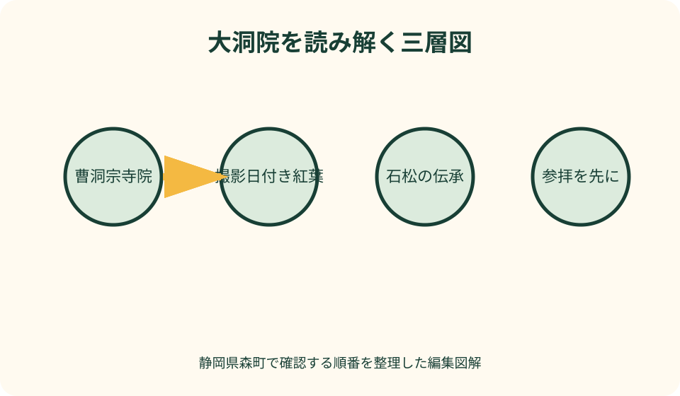
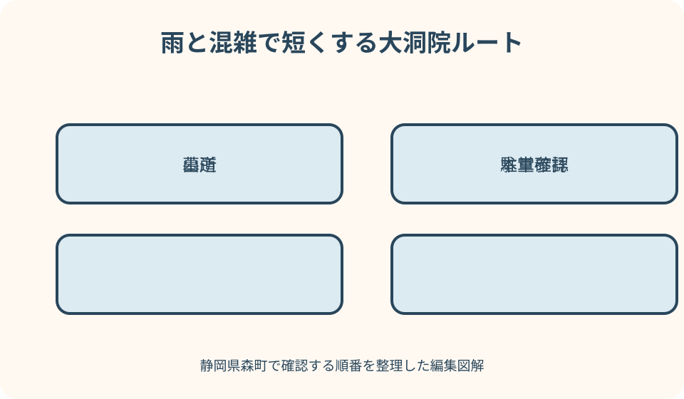

紅葉・寺院・森の石松｜最終確認 2026-08-10
静岡県森町・大洞院の紅葉と森の石松｜参拝・墓所・山道の歩き方
大洞院は森町橘にある曹洞宗寺院で、観光協会は紅葉の名所であり、浪曲で知られる森の石松の墓所がある寺として紹介しています。紅葉は自然の状態、参拝は寺院の営み、石松は浪曲や地域で語り継がれる人物像です。三つを一つの物語にまとめず、確かな出典と当日の条件を確認して訪ねます。

編集イラスト大洞院を三つの層で理解する
第一の層は寺院です。森町公式の歴史解説は、大洞院を曹洞宗の中心的な寺院、座禅の道場として紹介しています。観光地へ入る前に、山門、参道、本堂での参拝を中心に置きます。
第二の層は季節の景観です。町公式の紅葉情報は小國神社と大洞院を分け、撮影日ごとの色づきを掲載しています。寺の年間の姿のうち、秋の一時期を観察する情報です。
第三の層は森の石松です。観光協会と大洞院は、浪曲でなじみのある石松の墓所として大洞院を案内しています。物語、信仰、地域行事が重なる部分を、確定した伝記へ置き換えません。
一回の訪問では、参拝、紅葉、墓所を順に見ます。石松だけを目的に墓石へ直行したり、紅葉写真のため法要や参拝動線を横切ったりしない構成です。
それぞれの確認先も分けます。紅葉は町の当年写真、拝観と駐車は寺院公式、石松の紹介は町の歴史・観光協会・寺院の表現を照合します。
紅葉は撮影日の記録として読む
森町公式の紅葉情報には、大洞院の写真と色づき表現が撮影日ごとに並びます。ページの更新日だけでなく、目的地の写真が撮られた日を確認します。
見頃という表示は、その撮影時点の観察です。訪問日が後なら、間の気温、雨、風を見て、色づきの進行や落葉を考えます。翌週まで同じ状態とは断定しません。
大洞院公式にも境内の紅葉写真や当年行事が掲載されます。町の比較情報と寺院の現地発信で撮影時点が近いかを見て、一方の古い画像だけで決めません。
本堂、参道、橋、イチョウなど樹木と位置が異なれば、色づきと落葉はそろわない可能性があります。広角写真と地点が分かる説明を優先します。
ライトアップや紅葉まつりは、木が色づけば必ず行われる設備ではありません。寺院の当年告知で実施日、時間、変更、中止を確認し、過去の夜景写真から推測しません。
寺院参拝と紅葉鑑賞の順序
駐車または到着後は、まず山門や案内板で境内の進行と立入区域を確認します。紅葉がよく見える方向へ近道せず、参道を通って本堂へ向かいます。
法要、座禅、祈祷など寺院の営みがある場合、観光客の撮影より優先されます。係員の案内、ロープ、扉の開閉に従い、音を立てて別入口を探しません。
参拝後に紅葉を見れば、本堂や鐘楼、石垣を単なる背景ではなく寺院の構成として捉えられます。建物の名称は現地案内か寺院公式で確かめます。
御朱印や授与品を希望する場合、受付、授与の形式、対応可能な時間を当年案内で確認します。紅葉催事の限定品が常にあるとは考えません。
境内で飲食できる場所、出店、休憩所も催事日により変わり得ます。露店が写る過去写真を通常営業の根拠にせず、持参物とごみの扱いを確認します。
森の石松は伝承の言葉を保つ
森の石松は浪曲や講談で広く知られる人物像です。観光協会は『浪曲でおなじみ』と明示し、大洞院は墓所として紹介します。本稿もその表現を保ちます。
石松の生涯、出身、最期には作品や語りの違いが含まれます。観光案内の短い説明を史料で確定した年譜へ膨らませず、現地の解説板が何を根拠に示すかを読みます。
墓碑は写真撮影用の小道具ではなく、手を合わせる場所です。先に焼香や参拝の作法を確認し、墓前でポーズを取る、物を載せる、長時間場所を占めることを避けます。
勝ち運などの信仰的な説明は、寺院が授与品や案内で示す表現に従います。必ず願いがかなうという効果の断定や、個人の成功談を事実として書きません。
石松供養祭などの行事は紅葉期と別の可能性があります。供養祭の過去資料を通常参拝や秋の催事へ混ぜず、参加する年の主催者告知を探します。
駐車は通常日・紅葉期・供養祭で区別する
大洞院公式は境内駐車場を案内していますが、台数の掲載は空車保証ではありません。普通車と大型車、催事日の利用、駐車料金の扱いを訪問年の公式で確かめます。
観光協会の寺院案内には、紅葉時期の大型バスに関する条件も記されています。自家用車へ同じ条件が当てはまると推測せず、車種ごとに読み分けます。
供養祭の過去資料には大洞院周辺に一般駐車場を置かず、シャトルを運行した例があります。通常日の駐車経験を特別行事へ持ち込まない理由になります。
満車時は山道や門前で待つと、対向車と歩行者の動線を狭めます。寺院から代替が示されない場合は時間をずらすか、町なかの別目的へ変更します。
日没後のライトアップへ車で行くなら、入庫だけでなく出庫方向、歩行者、暗い山道を確認します。昼に見た道路が夜も同じ見え方とは限りません。

大洞院へ続く山道を安全に走る
大洞院は森町橘にあり、町なかの平坦な幹線沿いと同じ運転条件ではありません。寺院公式の推奨アクセスを使い、ナビが示す幅の狭い近道へ安易に入らないようにします。
紅葉期は景色を見る歩行者、対向車、停車車両が増えます。運転者は木々を見上げず、同乗者が撮影する場合も窓や身体を車外へ出させません。
雨の日は落葉が路面へ貼り付き、制動や側溝の見え方へ影響します。速度を落とし、急なハンドルやブレーキを避け、後続車へ追われても安全な場所まで進みます。
帰りの下りではブレーキと疲労を意識します。境内を出る前に靴底の泥を落とし、視界、灯火、燃料を確認してから運転を再開します。
大型車や運転に不安がある人は、道幅と駐車条件を寺院へ事前に相談します。到着してから転回場所を探す計画では、参拝者と地域交通へ負担がかかります。
雨・落葉・橋・階段で歩幅を変える
境内へ入ると、濡れた落葉が石や舗装の凹凸を隠すことがあります。色のきれいな葉の上を選んで歩かず、地面が見える部分へ足を置きます。
参道の橋は紅葉の構図になりやすい一方、撮影者が立ち止まると通路が狭くなります。欄干へ寄りかからず、通行する人を先に渡します。
階段では傘、カメラ、荷物で両手を塞がないようにします。撮影は段の途中ではなく、平らで他人が通れる場所まで移動してから行います。
雨後の苔、石垣周辺、木の根へ近づいて構図を作りません。立入表示がなくても、植栽の内側や斜面は歩行路ではないと考えます。
落葉が進んだ日には、木の色より足元の景観が主役になることもあります。ただし葉を集めて投げる、石碑や墓所へ載せる行為はせず、その場の状態を動かさずに見ます。
撮影は墓所・参拝者・夜間を分ける
本堂や紅葉を撮る前に、境内の撮影禁止表示を確認します。建物外観が撮影できても、堂内、仏像、法要が同じ扱いとは限りません。
石松の墓所では、墓参する人がいればカメラを下げます。墓碑の文字を写す場合も接触せず、供物、線香、個人が置いた物を動かしません。
三脚は橋や参道の幅を使い、暗い時間は脚が見えにくくなります。ライトアップで使用したい場合は寺院の許可と設置可能区域を事前に確かめます。
強い照明やフラッシュは、参拝、運転者、他の撮影者へ影響します。寺院の演出照明へ自分のライトを加えず、必要な撮影ができなければ目で鑑賞します。
公開写真には、他人の顔、車の番号、墓参者、御朱印の個人情報が写らないよう確認します。伝承を紹介する文章も寺院・町の出典を示し、創作を史実のように添えません。
公共交通とタクシーは帰路から作る
大洞院は駅前から簡単に徒歩で追加できる場所だと考えません。森町の観光地図で遠州森駅、町中心部、大洞院の位置と山側への移動を確認します。
天浜線を使う人は、まず帰りの列車を二候補選びます。寺を出てタクシーに乗る時間、駅での移動を差し引き、早い便へ戻るよう墓所と紅葉の滞在を配分します。
タクシーは駅や寺に常時待つとは限りません。往路の乗車、帰りの迎車地点、紅葉期の配車見込みを事業者へ事前に相談します。
町営・路線バスを使う案は、目的地近くを通るように見えるだけで採用しません。訪問日の運行、停留所からの歩道、帰りの便が成立するかを運行主体へ確認します。
ライトアップ後に公共交通へ戻る場合、暗い山道を徒歩で下る案を標準にしません。予約した車で駅へ戻れなければ、昼間の参拝へ変更します。
周辺史跡は地図と出典で選ぶ
観光協会は蓮華寺から大洞院へ続く歴史の散歩道を紹介しています。観音池や石などが点在するハイキングであり、紅葉参拝の余り時間に少し入る道ではありません。
散歩道を歩くなら、距離、所要、登り下り、日没、雨後の状態を別記事と地図で確認します。大洞院の駐車場へ車を置いたまま長時間歩けるかも寺院へ確認が必要です。
町公式の歴史観光案内板紹介地図には、町内の人物や史跡に関する案内板が掲載されています。石松以外の地域史へ広げる場合は、案内板の所在地と説明を出典として使います。
森町中心部へ戻って森の石松に関する展示や行事を探す場合、常設か、開催期間があるかを確認します。過去の石松まつり資料を現在の展示案内にしません。
同日に小國神社の紅葉も回る案は、双方の撮影日、駐車、混雑、退出時刻がそろう場合だけにします。色づきが違う場所を追うより、大洞院一か所で参拝を深める方が安全です。
見頃外・混雑・催事中止の代案
青葉が多ければ寺院の建築と参拝、落葉後なら石松墓所と歴史案内を主目的に変えます。紅葉が少ないからと私有地や山へ色を探しに入りません。
駐車待ちが発生している場合、山道の路肩で待機せず町なかへ戻ります。再訪するなら寺院の拝観と駐車可能な時間を確認し、日没前に退出できる場合に限ります。
紅葉まつりやライトアップが中止なら、夜に境内照明があると期待して向かいません。昼の通常参拝が可能かを寺院へ確認するか、訪問日を変えます。
雨で橋や参道が滑りやすければ、本堂参拝と入口近くの墓所だけに縮めます。歴史の散歩道、奥の撮影地点、二つ目の寺院を削ります。
同行者が石松の浪曲背景に関心を持たない場合、墓所見学を強制せず、集合場所と時間を決めて短く分かれるか、全員で寺院参拝だけにします。

良い点
大洞院では、曹洞宗寺院への参拝、秋の木々、森町で語られる石松の文化を一つの場所で学べます。ただし混ぜずに順番に見られることが魅力です。
森町公式が大洞院の紅葉を撮影日ごとに更新し、寺院も当年の境内や催事を発信しています。自然状態と施設運営を二方向から確認できます。
観光協会の寺院案内には、所在地、問合せ、駐車などの基本がまとまり、歴史の散歩道や年間行事へ情報を広げられます。
紅葉を外しても参拝と墓所、石松を外しても禅寺と地域史が残ります。訪問価値を一枚の見頃写真だけへ依存させずに済みます。
注文したい点
当年の紅葉ページから、大洞院公式の駐車、催事、ライトアップ、中止情報へ直接移れると、旅行者が過去年度の記事を使う誤りを減らせます。
境内図に本堂、橋、石松墓所、通常駐車場、バス区画、撮影時に通路を塞ぎやすい地点を示せば、初訪問でも参拝順を作りやすくなります。
石松の案内では、浪曲・伝承として紹介する内容と、寺院や町の史料で確認できる事項を表示上も分けてほしいところです。
山道について、推奨ルート、幅員注意、混雑時の待機禁止、夜間の退出方向を当年催事ページへ載せると安全です。
公共交通は固定時刻ではなく、天浜線、タクシー、町の交通案内へのリンクと、徒歩だけでは勧めにくい区間を明示すると判断しやすくなります。
代案・結論
当年紅葉の更新前なら、前年の見頃を予約日の根拠にしません。寺院参拝を主目的にするか、町の撮影更新が始まってから訪問日を選びます。
色づきが合わない日は墓所と寺院史、混雑日は町なかの歴史案内、雨天日は短い参拝というように、一つの条件変化へ一つの代案を用意します。
石松について分からない逸話に出会ったら、その場で本当だと決めず、案内板の設置者、寺院公式、町の歴史資料を確認します。分からないまま伝承として味わう選択もあります。
結論は、紅葉の撮影日、寺院の当年案内、墓所での参拝、山道と駐車を別々に確認し、落葉や混雑に応じて境内だけへ縮めることです。
大石の視点
大洞院の記事で私が守りたいのは、石松を説明しすぎないことです。浪曲の人物像を史実として塗り固めるより、町と寺院がどの言葉で伝えているかを示す方が正確です。
現地を歩いていないのに、橋からの眺めが最高だった、山道は簡単だったとは書きません。公式の地形・駐車情報から注意点を作り、当日の状態は訪問者が判断します。
紅葉の見頃を当てることも記事の最終目的ではありません。撮影日の事実と訪問日の間を天候で読み、外れたとき参拝へ戻れる設計の方が長く役立ちます。
墓所の前では観光の速度を落としたいと思います。勝ち運の物語や珍しい石碑より、先に手を合わせ、他の墓参者へ場所を譲る。そこから地域文化を見るべきです。
大洞院一か所で終える日は不足ではありません。寺、木々、墓所、案内板を順に見て、安全に山道を戻る時間まで含めれば、読み応えのある森町の一日になります。
公式情報・確認先
掲載内容は次の一次情報を基礎に整理しました。営業、料金、催し、交通は変わるため、出発前または手続き前にリンク先で最新情報を確認してください。
- 森町紅葉情報（静岡県森町、2026-08-10確認）
- 小國神社・大洞院の青もみじ（静岡県森町、2026-08-10確認）
- 交通・信仰（静岡県森町、2026-08-10確認）
- 歴史観光案内板紹介MAP（静岡県森町、2026-08-10確認）
- 橘谷山 大洞院（静岡県森町観光協会、2026-08-10確認）
- 大洞院 公式サイト（橘谷山 大洞院、2026-08-10確認）